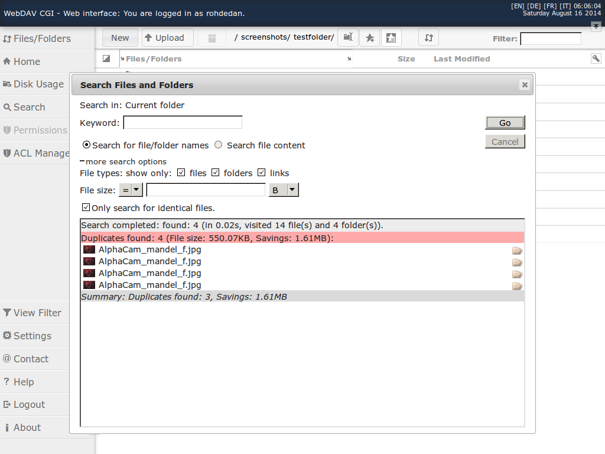
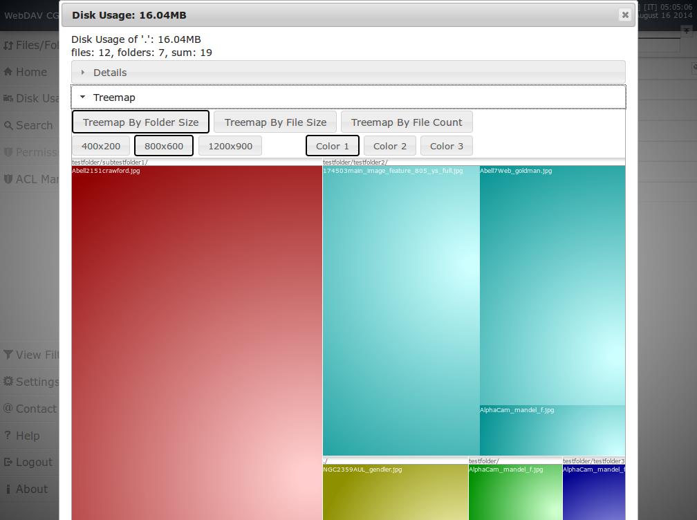
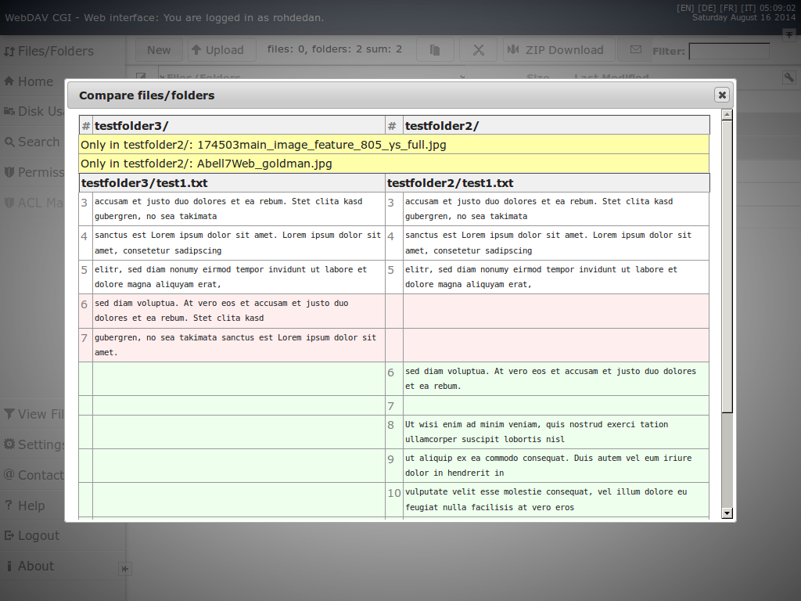
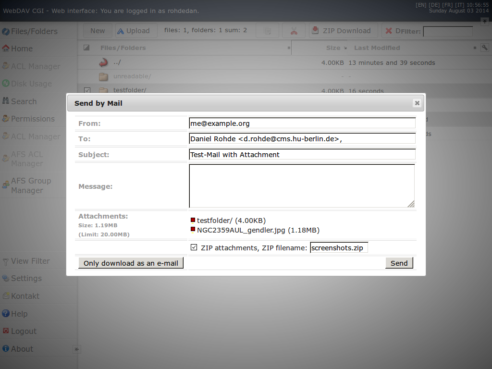
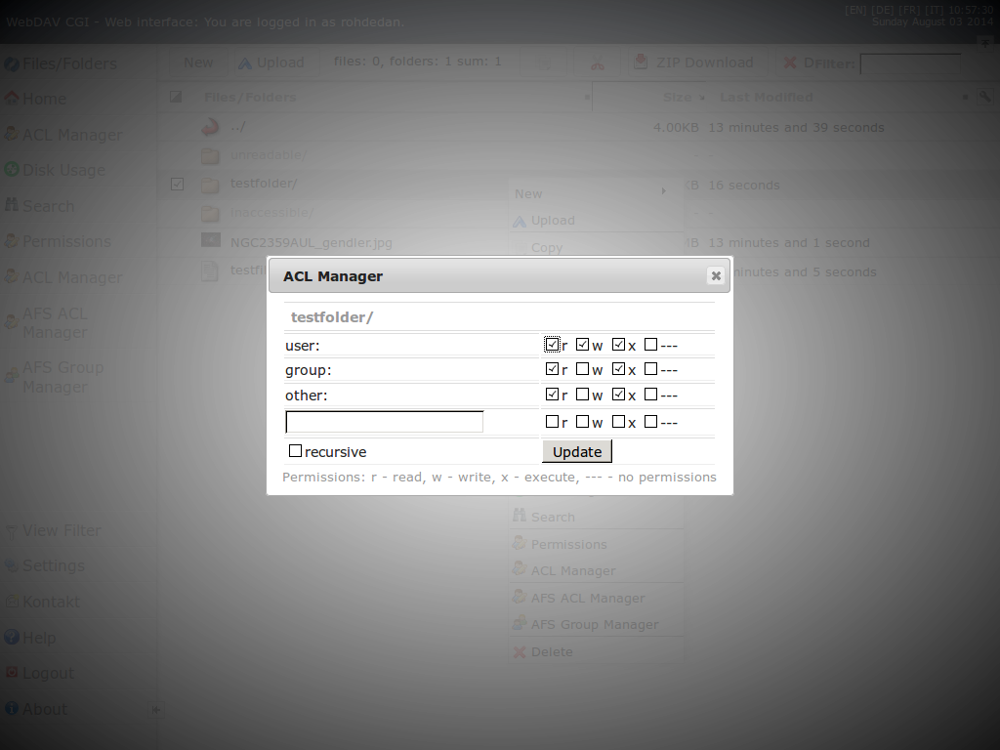
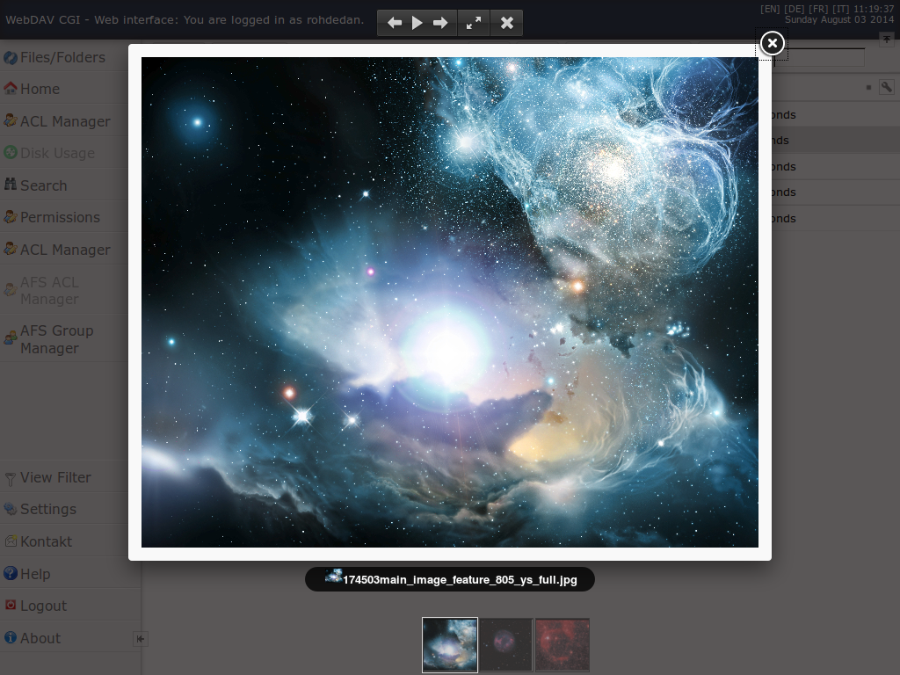

WebDAV CGI
 ... brings your file service to the Web.
WebDAV CGI adds a modern Web interface and WebDAV to file systems like AFS, NFS, CIFS/SMB, EXT, GFS, and so on.
It preserves existing file permissions by using a included setuid/setgid wrapper.
... brings your file service to the Web.
WebDAV CGI adds a modern Web interface and WebDAV to file systems like AFS, NFS, CIFS/SMB, EXT, GFS, and so on.
It preserves existing file permissions by using a included setuid/setgid wrapper.
Try it now and download the WebDAV CGI Virtual Box.
Content of this site:
Features
WebDAV CGI ...- supports WebDAV compliance classes 1, 2 and 3.
- supports AFS and can be used as a WebDAV to AFS bridge or as a AFS Web front end with AFS ACL Manager and AFS Group Manager to replace filedrawers (afs file management)
- supports POSIX compliant file systems and POSIX ACLs.
- supports GFS cluster file system
- supports Windows/Samba share access (SMB/CIFS support; including Kerberos authenticated access to ADS integrated shares)
- offers a simple Web interface for file/folder management: clipboard; file/Zip upload/download; rename, move, create and delete folders; file/folder name search; property viewer; file/folder statistics; change file/folder permissions; shows quota; image thumbnails
- has a server-side trash can.
- implements CGI interface.
- supports setuid/setgid changes to preserve file permissions.
- RFC 2518 - WebDAV (classes 1,2)
- RFC 4918 - WebDAV revision (class 3)
- RFC 4331 - Quota properties
- RFC 4709 - WebDAV mount
- RFC 4791 - WebDAV CalDAV (incomplete: no postconditions/preconditions, reports)
- RFC 3744 - WebDAV ACL (incomplete: no postconditions/preconditions, reports)
- RFC 5397 - WebDAV Current Principal Extension
- RFC 5689 - Extended MKCOL for WebDAV
- RFC 3253 - Versioning Extensions to WebDAV (only properties supported-report-set, supported-method-set)
- RFC 5323 - WebDAV Search (DASL) - basicsearch
- RFC 5842 - Binding Extensions to Web Distributed Authoring and Versioning (WebDAV) (incomplete: no post/preconditions)
- CalDAV Scheduling Extensions to WebDAV (Draft; incomplete/ALPHA: only collection/principal properties support)
- Additional WebDAV Collection Properties (Draft)
- Calendar Collection Entity Tag (CTag) in CalDAV (Draft)
- vCard Extensions to WebDAV (CardDAV) - CardDAV/iCard support (Draft)
- Storage of Groupware Objects in WebDAV (GroupDAV)
- MS-WDVME - WebDAV Microsoft Extensions
- MS-WDVSE - WebDAV Server Extensions
Screenshots
| Web interface | ||||
|---|---|---|---|---|
|
file/folder browser
|

AFS Group & ACL Manager
|

Permissions dialog
|
||
|

Search dialog with duplicate search
|

Disk usage dialog
|

Compare files/folders dialog
|
||
|

Send by mail dialog
|

POSIX ACL dialog
|

Image gallery
|
||
| WebDAV clients | ||||

Nautilus
|

Konqueror
|

cadaver
|
||

davfs2
|

M$ Windows Explorer (XP)
|

BitKinex 3.2.3
|
||
{kind=link}
{kind=link}
{kind=link}
{kind=link}
{kind=link}
{kind=link}
Download
Latest release: zip | tar.bz2 (Changes: see CHANGELOG from SVN).
The latest BETA release is also available:
svn checkout svn://svn.code.sf.net/p/webdavcgi/code/trunk webdavcgi
Licensing
GPLv3
© ZE CMS, Humboldt-Universität zu Berlin | Written 2010-2014 by Daniel Rohde